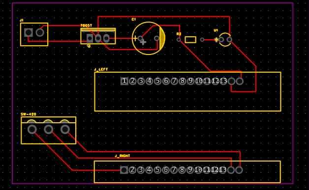
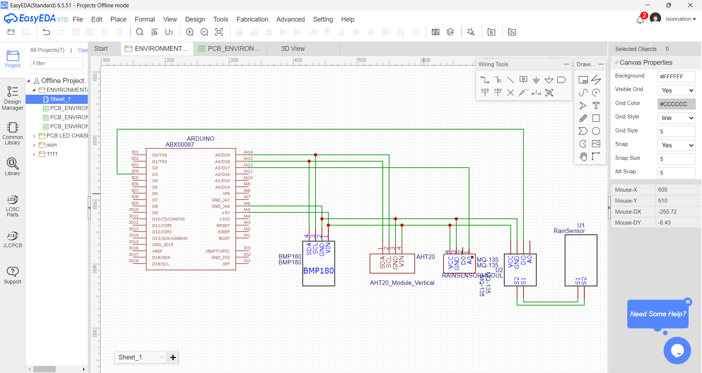

BSEE-3A
Bicol University College of Engineering, Legazpi City, Albay, Philippines, 4500
(SUBSTATION INSPECTION & REMOTE INTERVENTION UTILITY SYSTEM)
The development of the Project Sirius Mk. II began on October 16, 2025, with the preparation of the initial sketch design for the exterior and base of the system. During this stage, the team also conducted separate test trials for the ultrasonic sensor, L293D motor driver, and servo motor to verify the functionality of each component. From October 23 to 27, 2025, further consultations revealed that the L293D motor driver was not compatible with the high-powered motors being used. Consequently, the team decided to replace it with the BTS7960 high-current H-bridge module, which could better support the required current capacity. Orders were placed for two BTS7960 modules and two RS390 electric motor gearboxes. By October 28, 2025, we focused to the parallel development of the project’s web development. The website was designed to feature a clean and responsive layout with a home button and a menu that contained six clickable group links. Its main page displayed multiple narratives enhanced with smooth fade-in animations that activated as the user scrolled, creating an engaging and interactive reading experience. On October 29, 2025, progress continued with the initial construction phase of the robotic arm. The mechanical components, including bolts, screws, servo motors, servo brackets, and other parts, were successfully assembled. A physical inspection was conducted to verify the stability of all components, ensuring that moving joints were properly aligned and free from obstructions. Although minor adjustments were made during assembly to ensure proper alignment, no major issues were encountered. The structure was declared ready for the next stage, which includes wiring, electronic integration, and programming. By October 31, 2025, the ordered BTS7960 motor driver modules had arrived, while the RS390 electric motor gearbox order was cancelled and reordered due to supplier issues. The replacement components were subsequently placed in transit.


On November 3, 2025, code preparation began for the integration of the BTS7960 motor driver and the RS390 electric motor gearbox, marking the beginning of the programming phase. Parallel to this, on November 5, 2025, progress was made on the vibration sensor subsystem. The printed circuit board (PCB) layout for the vibration sensor was designed, and the associated electronic components were tested. All components were found to be working properly and ready for integration into the system.On November 12, the group made progress on the electrical integration of the project by completing the initial wiring of the power supply and its connections. The team successfully identified and connected the necessary terminals—Live (AC), Neutral (AC), Ground, V– (DC), and V+ (DC)—to ensure that the system receives proper and stable power distribution. This step allowed the group to test the unit and verify that the components respond correctly to the electrical input. During the testing phase, it was observed that some of the turns were unable to perform their full range of motion. This issue is related to the programming rather than the wiring, indicating that further adjustments in the code may be required to achieve smooth and complete movement. Other than this, no major complications were encountered. With the wiring completed, the project is now prepared for the next stage, which includes refining the coding and conducting additional tests to achieve optimal functionality. On November 13, 2025, we printed the PCB Layout to prepare for etching and soldering by next week.


Project Sirius Mk. II has progressed smoothly. The robotic arm’s mechanical structure has been fully assembled and is now prepared for electronic integration and programming. The website component has achieved its core functionality, featuring a responsive and user-friendly interface that enhances accessibility across multiple platforms. Meanwhile, the E-Monitoring system and vibration sensor modules continue to advance, with only minor issues encountered due to faulty sensor components that are currently being addressed. Moving forward, the team will focus on integrating the robotic arm’s electronic system, finalizing the motor driver programming, retesting the replacement DHT22 sensor, and conducting comprehensive system testing to ensure the complete and reliable operation of Project Sirius Mk. II.


Project SIRIUS MK. II represents more than just a technical achievement—it embodies teamwork, innovation, and perseverance. Through months of planning, designing, and testing, the team not only developed an intelligent inspection system but also gained valuable lessons in collaboration and problem-solving. The project demonstrated how modern automation can significantly enhance operational safety and efficiency in electrical substations. Beyond the hardware and programming, it taught the importance of persistence, adaptability, and shared goals. As future engineers, we envision this project as a stepping stone toward smarter, safer, and more sustainable industrial solutions. The experience has strengthened our confidence to take on even greater challenges ahead.
Bicol University College of Engineering, Legazpi City, Albay, Philippines, 4500

Engr. Rogie Mar A. Bolon
Engr. Vincent Domo Diaz
Engr. Melody Mae P. Montas
Institute of Integrated Electrical Engineers
Purpose / Function: Designed to demonstrate mechanical movement using servo motors; intended for controlled motion once electronics and programming are integrated. Current Known Features: Fully assembled mechanical structure with bolts, screws, servo motors, and servo brackets.
Purpose / Function: Provides foundation for the robot arm system; part of the exterior and base sketch created between Oct 16–22. Current Known Features: Base design completed during early sketching phase.
Purpose / Function: To monitor environmental parameters such as temperature and humidity. Current Progress: The AHT20 sensor has arrived as a replacement for previous faulty temperature sensors. The component has been tested and is fully functional. A PCB layout for the environmental monitoring module has been created, and the team is preparing to print and etch the board for integration into the system. This will provide accurate and reliable environmental data for monitoring purposes within Project Sirius Mk. II.
Purpose / Function: To capture thermal imagery of the environment using a drone-based system. Current Known Features / Progress: The drone has been calibrated for flight, including connecting the remote control to a mobile device for live footage mirroring and adjusting manual controls for precise operation. Test flights have been conducted to determine the maximum control distance.
Purpose / Function: Detects vibration as part of the monitoring system. Current Known Features: PCB layout completed; all electronic components tested and working as of Nov 5.
Purpose / Function: Acts as a visual and interactive platform for the project. Current Features: Clean, responsive layout Home button + menu with six group links Overlays for members and galleries are integrated, with smooth UI interactions. Scroll-triggered fade-in animations for narratives